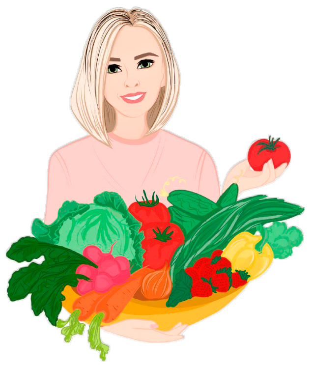

Весенний гурман
Программа питания с акцентом на сезонные овощи и фрукты. Разнообразное, очень вкусное меню! Простые и оригинальные рецепты. Включены десерты. В меня изредка встречаются супы. Подходит для питания всей семьи. Программа приводится под Ваши параметры, цели и образ жизни. Подходит для быстрого похудения, для плавного похудения, либо для поддержания веса – в зависимости от того, какую цель Вы определите в данных для расчета. Подходит для беременных и кормящих. КБЖУ определяется индивидуально, в зависимости от данных, которые Вы внесете в анкету для расчета. Рецепты подробно, пошагово расписаны. Продукты в рецептах запланированы точно на Вашу порцию. Вам нужно просто приготовить и съесть все, что указано в меню на день, и Вы автоматически попадаете в свой КБЖУ. В программу входит инструкция по использованию, рекомендации по приемам пищи и питьевому режиму, список замен продуктов. Продуктовая корзина расписана по неделям, прилагается к меню.Новая классика
Меню, которое подойдет для питания всей семьи. Классическая домашняя кухня. Вкусные
и разнообразные рецепты из простых и привычных продуктов. Блинчики, котлеты,
запеканки, необычные салаты и многое другое – ваши близкие с удовольствием
присоединятся к Вам.
Программа приводится под Ваши параметры, цели и образ жизни. Подходит для быстрого
похудения, для плавного похудения, либо для поддержания веса – в зависимости от того,
какую цель Вы определите в данных для расчета. Подходит для беременных и кормящих.
Осеннее меню
Программа питания с акцентом на сезонные овощи и фрукты
Самая длинная программа питания! 4 стандартные недели с продуктовой корзиной в
средней ценовой категории + 2 бонусные недели с деликатесами и суперфудами в подарок.
Программа питания с акцентом на сезонные овощи и фрукты. Разнообразное, очень вкусное
меню! Простые и оригинальные рецепты. Включены десерты. В меня изредка встречаются
супы. Подходит для питания всей семьи.
Программа приводится под Ваши параметры, цели и образ жизни. Подходит для быстрого
похудения, для плавного похудения, либо для поддержания веса – в зависимости от того,
какую цель Вы определите в данных для расчета. Подходит для беременных и кормящих.
Программа питания включает в себя 42 дня. Дни меню не повторяются.
КБЖУ определяется индивидуально, в зависимости от данных, которые Вы внесете в анкету
для расчета.
Рецепты подробно, пошагово расписаны. Продукты в рецептах запланированы точно на
Вашу порцию. Вам нужно просто приготовить и съесть все, что указано в меню на день, и
Вы автоматически попадаете в свой КБЖУ.
В программу входит инструкция по использованию, рекомендации по приемам пищи и
питьевому режиму, список замен продуктов.
Продуктовая корзина расписана по неделям, прилагается к меню.
Рыба моя
Программа "Рыба моя" — долгожданная новинка для любителей легко питаться и молодо
выглядеть! В этой программе безупречно сочетаются блюда на разный бюджет, от базовых
бюджетных до деликатесов и суперфудов. Но все дни в меню - разнообразные, изысканные
и простые в приготовлении. Рыба, как основа рациона - это отличный выбор! Низкий
уровень холестерина, отсутствие агрессивных насыщенных жиров, огромное количество
энергии! Баланс БЖУ идеально подобран, поэтому вы получаете все необходимо - и белок,
и микроэлементы в достаточном количестве. Этот рацион можно легко назвать
омолаживающим, так как ваша кожа и волосы ответят вам благодарностью, качество тела
улучшится, а лишние килограммы будут испаряться безвозвратно!
Программа приводится под Ваши параметры, цели и образ жизни. Подходит для быстрого
похудения, для плавного похудения, либо для поддержания веса – в зависимости от того,
какую цель Вы определите в данных для расчета. Подходит для беременных и кормящих.
Программа питания включает в себя 42 дня (6 недель). Дни меню не повторяются.
Торопыжка делюкс
В семействе программ «Торопыжка» появилась долгожданная новинка! В этой программе
успешно сочетаются между собой базовые продукты из повседневного рациона с
деликатесами и супер-фудами, которые удачно разбавляют некоторые блюда в меню и
делают их изысканными!
В этот раз, кроме классических рецептов, я добавила много блюд из разных стран мира. Это
просто гастрономическое путешествие!.. Я добавила изысканные (но простые в
приготовлении) рецепты из кухни Туниса, Греции, Венгрии... А также вам встретятся и
Азия, и Италия, и Испания!
При этом, как и всегда при выборе программ «Торопыжка», я гарантирую, что, питаясь по
программе «Торопыжка Делюкс», Вы проведете на кухне не более 30 минут в день!
Программа приводится под Ваши параметры, цели и образ жизни. Подходит для быстрого
похудения, для плавного похудения, либо для поддержания веса – в зависимости от того,
какую цель Вы определите в данных для расчета. Подходит для беременных и кормящих.
Программа питания включает в себя 28 дней. Дни меню не повторяются.
КБЖУ определяется индивидуально, в зависимости от данных, которые Вы внесете в анкету
для расчета. Рецепты подробно, пошагово расписаны. Продукты в рецептах запланированы
точно на Вашу порцию. Вам нужно просто приготовить и съесть все, что указано в меню на
день, и Вы автоматически попадаете в свой КБЖУ.
В программу входит инструкция по использованию, рекомендации по приемам пищи и
питьевому режиму, список замен продуктов, рекомендации по выходу из программы и
таблица контроля результатов. Продуктовая корзина расписана на каждый день отдельно и
по неделям, прилагается к меню.
Народный гурман
Я знаю, что многим из вас сложно выбрать программу у меня на сайте, ведь их там так
много! И каждая хороша в чем-то своем. И вроде вы уже готовы начать правильно питаться,
и вы доверяете мне, как диетологу, и хотите скорее ощутить ЛЕГКОСТЬ! Но тут подходит
момент выбора программы и... всё. Приехали. Но я нашла решение! И вы сейчас точно
разделите мой восторг! Я создала для вас меню "НАРОДНЫЙ ГУРМАН"! Что это такое?
Рассказываю, читайте скорее!
Это меню, в котором собраны ВАШИ самые любимые дни из всех моих программ! По
каждому меню я вывешивала голосование, и вы сами выбирали лучшие дни и недели! И,
проведя огромную работу по анализу ваших предпочтений, я создала эту программу
"НАРОДНЫЙ ГУРМАН".
Программа питания включает в себя 28 дней. Дни меню не повторяются.
КБЖУ определяется индивидуально, в зависимости от данных, которые Вы внесете в анкету
для расчета. Рецепты подробно, пошагово расписаны. Продукты в рецептах запланированы
точно на Вашу порцию. Вам нужно просто приготовить и съесть все, что указано в меню на
день, и Вы автоматически попадаете в свой КБЖУ.
В программу входит инструкция по использованию, рекомендации по приемам пищи и
питьевому режиму, список замен продуктов, рекомендации по выходу из программы и
таблица контроля результатов. Продуктовая корзина расписана на каждый день отдельно и
по неделям, прилагается к меню.
Летнее меню
Программа питания с акцентом на сезонные овощи и фрукты. Разнообразное, очень вкусное
меню! Простые и оригинальные рецепты. Включены десерты. Подходит для питания всей
семьи.
Программа приводится под Ваши параметры, цели и образ жизни. Подходит для быстрого
похудения, для плавного похудения, либо для поддержания веса – в зависимости от того,
какую цель Вы определите в данных для расчета. Подходит для беременных и кормящих.
КБЖУ определяется индивидуально, в зависимости от данных, которые Вы внесете в анкету
для расчета.
Рецепты подробно, пошагово расписаны. Продукты в рецептах запланированы точно на
Вашу порцию. Вам нужно просто приготовить и съесть все, что указано в меню на день, и
Вы автоматически попадаете в свой КБЖУ.
В программу входит инструкция по использованию, рекомендации по приемам пищи и
питьевому режиму, список замен продуктов.
Продуктовая корзина расписана по неделям, прилагается к меню.
Дурдом как вкусно
Представляем вам идеальное меню по версии меня - журналиста, редактора и блогера
@olechkin_durdom.
Наша семья сбросила 25 килограммов без спорта, угрызений совести и истязания себя
диетами. Только с помощью лучших на свете жениных меню! И не собираемся
останавливаться на достигнутом.
Мы перепробовали все рационы – от классики до сезонных меню, от торопыжек до шеф
меню. Мы собрали рацион на месяц из лучшего и любимого, мы пошептались в директе с
коллегами- худеющими и учли их пожелания. Ну и весьма немаловажный факт: меню
одобрено батей, если вы понимаете, о ком я. Ибо из 25 килограммов, наеденного
непосильным трудом, растаявшие 15 кг – его личный подвиг.
Программа приводится под Ваши параметры, цели и образ жизни. Подходит для быстрого
похудения, для плавного похудения, либо для поддержания веса – в зависимости от того,
какую цель Вы определите в данных для расчета. Подходит для беременных и кормящих.
Количество порций